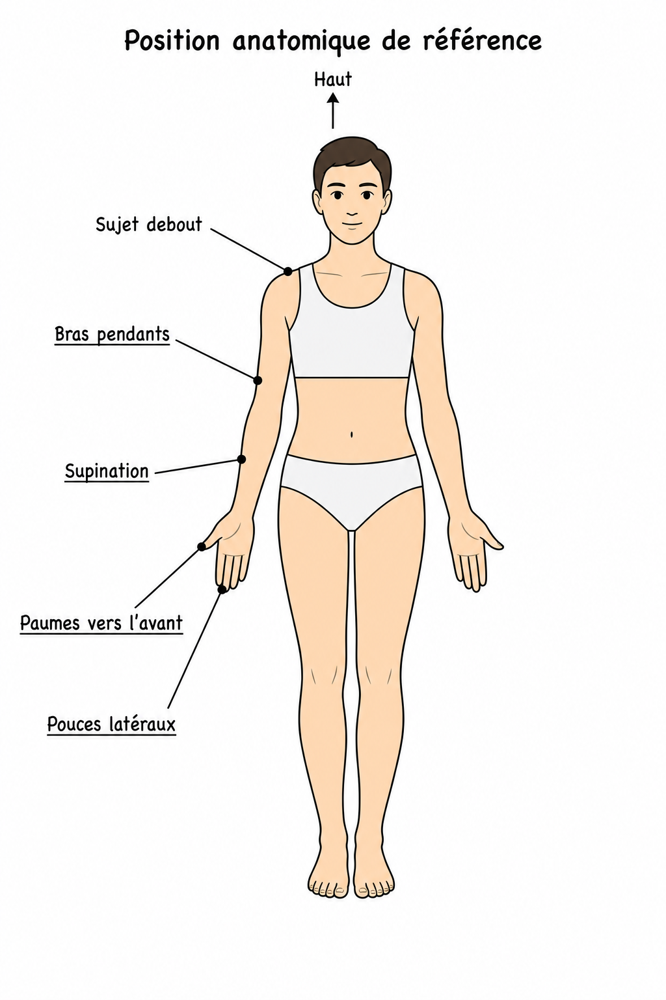
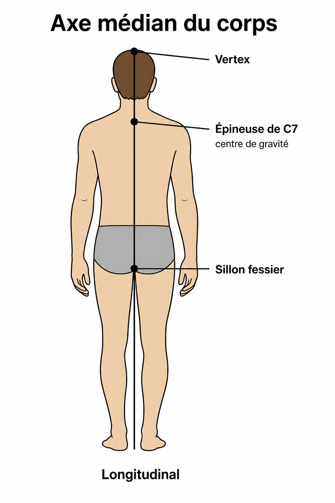
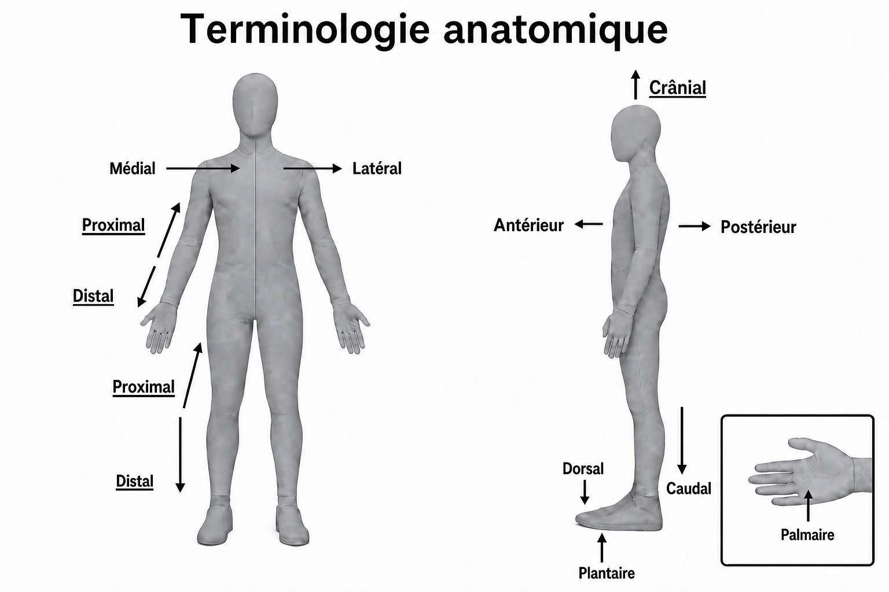
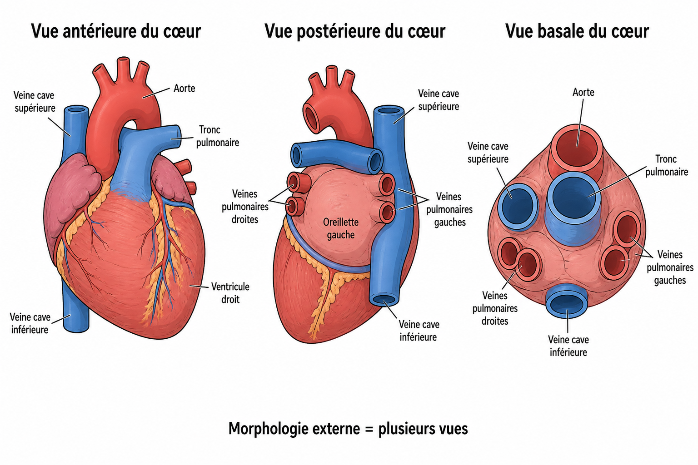
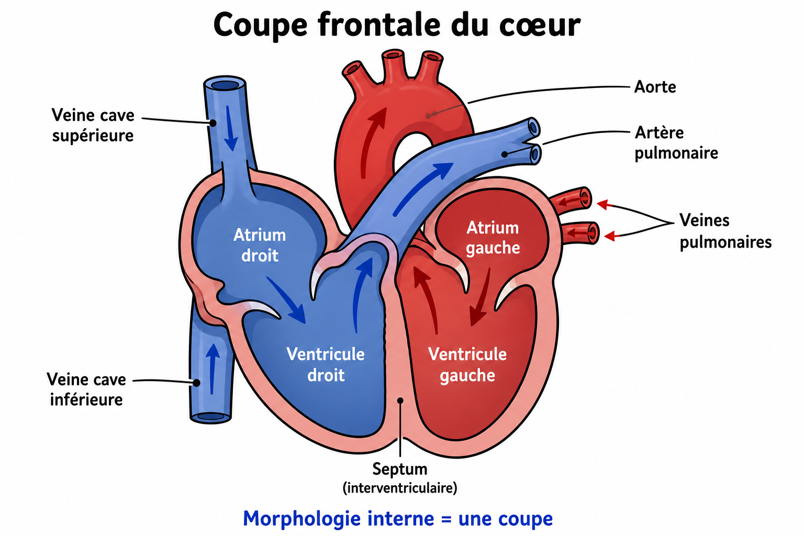
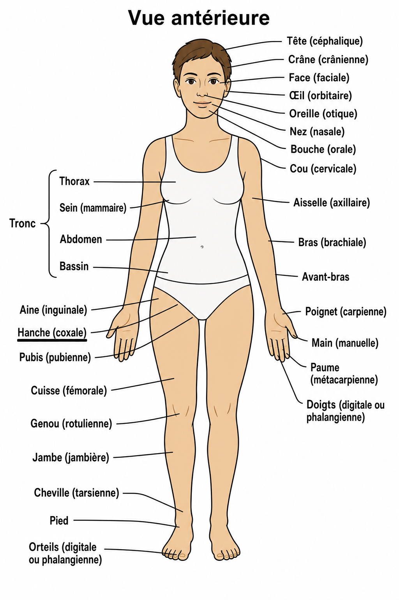
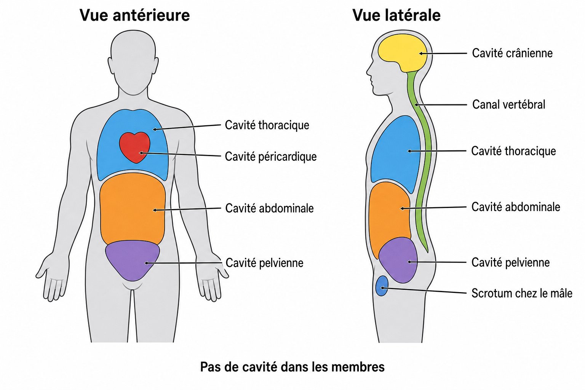
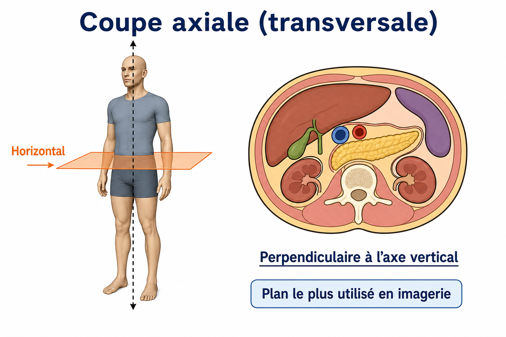
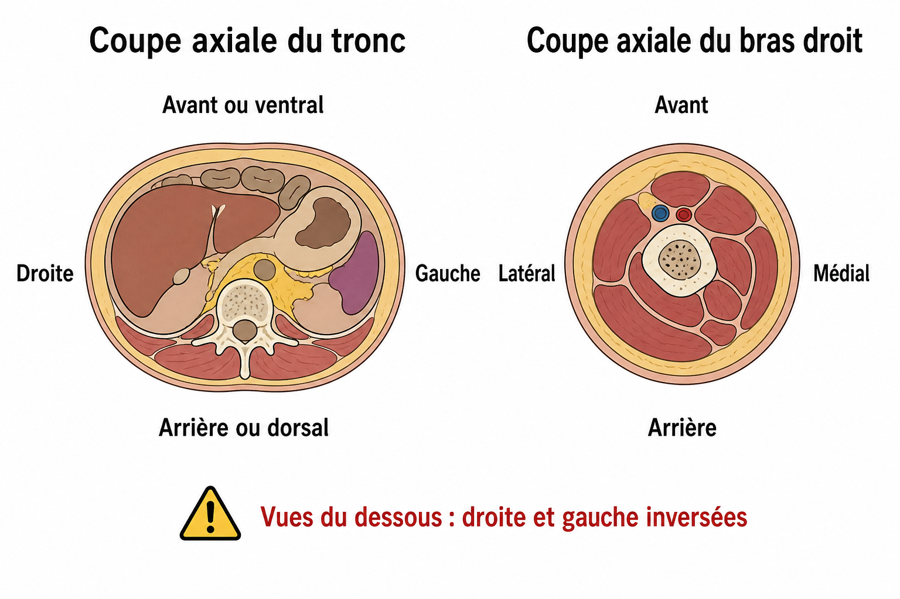

Schéma → cours avec mots clés à placer → flash P1/P2/P3. Mode Lecture. Modèle figé.
1. Anatomie — Généralités P3
Science morphologique fondée sur l’observation, la dissection (réelle ou virtuelle) et l’imagerie.
- Nomina Anatomica — Bâle (Suisse), 1895.
- — (langage international).
- Exemple : omoplate → .
2. Position anatomique de référence P1

Sujet debout ⭐⭐
- Bras le long du corps ⭐⭐
- Mains en ⭐⭐ : paumes vers l’ ⭐⭐, pouces en direction ⭐

Axe médian
Axe longitudinal passant par le , (centre de gravité) et le .
3. Terminologie anatomique P2

- Avant : antérieur / ventral · Arrière : postérieur / dorsal
- Haut : ⭐ · Bas : ⭐
- ⭐ = proche de l’origine du membre · ⭐ = éloigné
- Même côté : ⭐ · Côté opposé :
- Proche du plan médian : · Éloigné :
4. Subdivisions de l’anatomie P2
- Descriptive : externe = · interne =
- Générale : par ⭐ (= regroupement par ⭐)
- Aussi : topographique · fonctionnelle · développement · comparée




- Hanche = région ⭐
- Pas de cavité dans les .
- Appareil = groupement de systèmes pour une même fonction ⭐, éventuellement dans des ⭐.
- Locomoteur · Cardio-vasculaire · Respiratoire · Digestif · Endocrinien · Urinaire · Génital · Nerveux · Sensoriel
5. Les 3 plans de référence P1

Les 3 plans sont perpendiculaires entre eux.
Frontal / coronal ⭐

Plan ⭐, parallèle au / à la face ventrale ⭐. Se déplace d’avant en arrière.
Sagittal ⭐

Plan aussi ⭐ · divise le corps en moitiés ⭐ · se déplace de médial en latéral.
Sagittal médian : passe par le ⭐ · moitiés ⭐.
Plans sagittaux paramédians : s’éloignent de l’axe médian.
Axial / transversal

Plan le plus utilisé en imagerie : · à l’axe vertical du corps ⭐ · se déplace de crânial en caudal.
Orientation axiale P2

Coupes axiales vues du : avant en haut de l’image ; la droite du patient est à .
Flashcards — fin de fiche
Classées par priorité. Ouvre un bloc, révise, passe au suivant.
P1 — à maîtriser en priorité
P2 — à bien connaître
P3 — lecture attentive
Ouvre sur téléphone pour relecture. Style accueil plus tard.